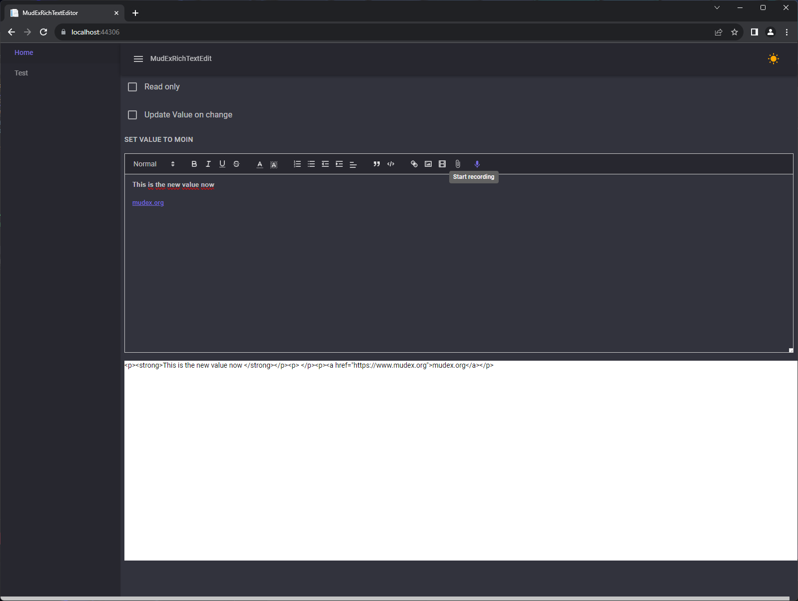

Echte Zwei-Wege-Bindung
@bind-Value funktioniert wie bei jedem Input — inklusive Required-Validierung in einem MudForm.
MudExRichTextEditor verpackt Quill 2 in eine Blazor-Komponente, die dein MudBlazor-Theme respektiert, sich wie jedes andere Eingabefeld binden lässt und Tabellen, Mentions, Bildgrößenänderung, Dateianhänge und Spracheingabe mitbringt. Läuft unter WebAssembly und Server — und auch ohne MudBlazor.

Keine Wrapper-Verrenkungen: Parameter, Zwei-Wege-Bindung und Formularvalidierung verhalten sich so, wie man es von einem Blazor-Input erwartet.
@bind-Value funktioniert wie bei jedem Input — inklusive Required-Validierung in einem MudForm.
Toolbar und Editorfläche folgen deiner Palette: hell, dunkel und eigene Farben inklusive.
Bild anklicken, Anfasser ziehen. Eingefügte und per Drag & Drop abgelegte Bilder lassen sich automatisch komprimieren.
Vollständige Tabellenbearbeitung über QuillTableBetterModule — Zellen einfügen, verbinden, formatieren und löschen.
Typisiertes QuillMentionModule<T> mit asynchroner Vorschlagssuche und Klick-/Hover-Callbacks.
Ein eingebautes Mikrofon-Werkzeug diktiert direkt ins Dokument — in der Kultur der Komponente.
Datei-Dialog mit Upload-Hooks: eigene URL zurückgeben oder den Editor eine Data-URL einbetten lassen.
Beliebige Quill-Module über IQuillModule einbinden: JS, CSS und Konfiguration in einer Klasse.
dotnet add package MudExRichTextEditor_Imports.razor ergänzen@using MudExRichTextEditor@page "/"
<MudExRichTextEdit @bind-Value="_html" Height="320" />
@code {
private string _html = "<p>Hello <b>MudBlazor</b>!</p>";
}QuillPresets bündelt passende Toolbar und Module. Minimal ist reine Textformatierung, Standard ergänzt Listen, Links und Bilder mit Komprimierung, Full schaltet Farben, Ausrichtung, Video und Tabellen frei.
Alle Skripte und Stylesheets kommen aus _content/MudExRichTextEditor. Seit 9.5.1 ist auch das Tabellen-Modul mit dabei, damit keine Anfrage mehr deinen Host verlässt — abgeschottete Umgebungen laufen ohne Zusatzarbeit.
@using MudExRichTextEditor.Types
<MudExRichTextEdit @bind-Value="_html"
Tools="@QuillPresets.Standard.Tools"
Modules="@QuillPresets.Standard.Modules"
Height="360"
Immediate="true" />Anfasser zum Skalieren von Bildern und Embeds.
Verkleinert eingefügte und abgelegte Bilder, bevor sie in deinem Speicher landen.
Tabellen mit Kontextmenü für Zeilen, Spalten, Verbinden und Zellformatierung.
Asynchrone Mention-Suche über deinen eigenen Typ, mit mehreren Auslösezeichen.
@using MudExRichTextEditor.Extensibility
<MudExRichTextEdit @bind-Value="_html" Modules="@_modules" />
@code {
private IQuillModule[] _modules = [
new QuillBlotFormatterModule(), // resize images by clicking them
new QuillImageCompressorModule(), // shrink pasted/dropped images
new QuillTableBetterModule(), // tables (needs QuillTools.TableButton())
];
}Über NuGet installieren — oder erst in der Live-Demo jeden Toolbar-Button durchklicken.